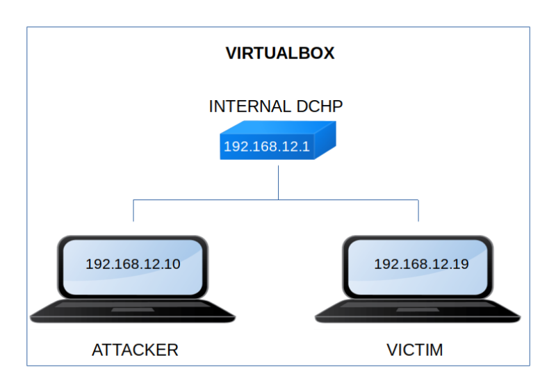

Aragog (1.0.2)
▸ Aragog (1.0.2)
▸ 1. Scan Network
▸ 2. Finding Services and Ports
▸ 3. Enumerate
▸ 4. Exploiting File Manager
▸ 4.1 Using an exploit
▸ 4.2 Cracking the password
▸ 4.3 Connecting via SSH (First flag)
▸ 5. Privilege Escalation
▸ 5.1 pspy2 – Unprivileged Linux Process Snooping
▸ 5.2 Creating a reverse shell
▸ 5.3 Getting the second flag
Difficulty: Intermediate.
Flag: 2 flaga.
Learning:
Scanning
• Open ports and Running services (Nmap)
Enumeration
• Dirb
• Wpscan
Exploit
• Using an exploit
• Cracking a password
• Decode a password
Access Victim’s shell (SSH login)
• Capture horcrux1.txt flag
Privilege Escalation
• Capture horcrux1.txt flag
• Download (Mirror): https://download.vulnhub.com/harrypotter/Aragog-1.0.2.ova
• Download (Torrent): https://download.vulnhub.com/harrypotter/Aragog-1.0.2.ova.torrent
Install the machine on VirtualBox:
1. Download the file.
2. On Virtualbox choose File->Import Appliance.
3. Select the file “ova”.
4. Accept to import.


Watch your Machine IP.
$ ifconfig
Output:

Diagram
